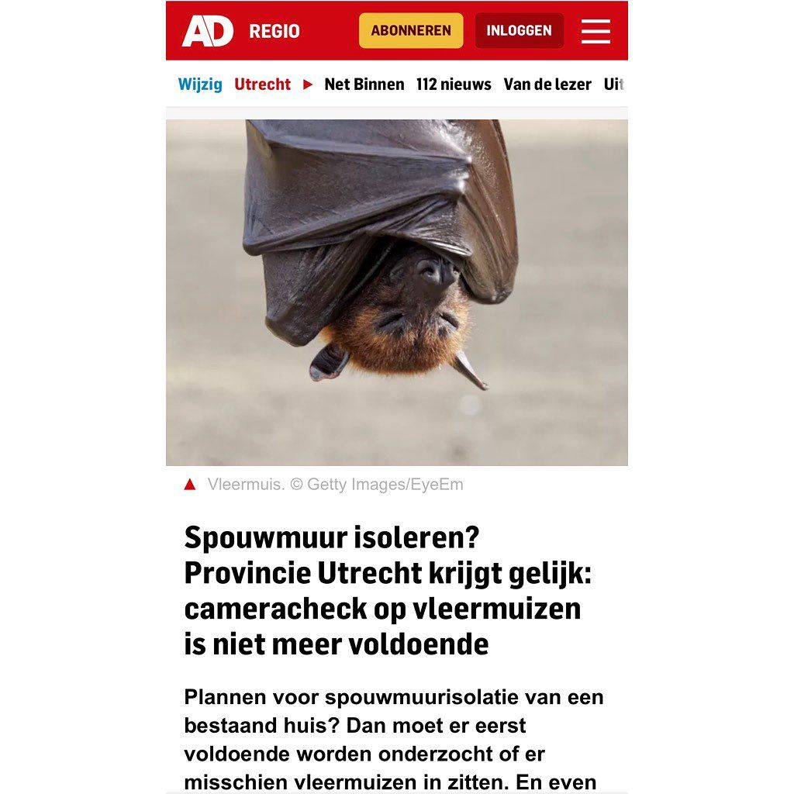

Vleerhond, geen vleermuis
2 augustus 2023 · AD Utrecht
- Op de foto
- Vleerhond
- Het ging over
- Vleermuis

Ik ben benieuwd hoe vaak we het nog moeten gaan zeggen. Gebruik nou geen foto’s van vleerhonden! Deze komen alleen voor in Afrika, Azië en Australië. Of in een spouwmuur in Utrecht blijkbaar. Kleine funfact: ze zijn veel groter dan de Europese vleermuizen maar eten ipv insecten vrijwel alleen maar fruit.
@ad_nl @adutrecht